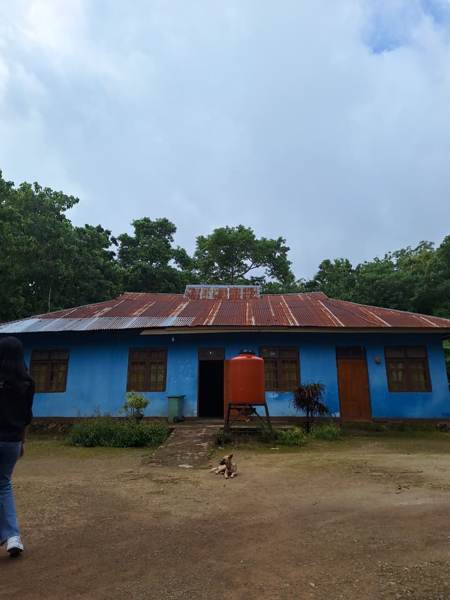

Desa Oelomin merupakan salah satu desa di Kecamatan Nekamese, Kabupaten Kupang, yang terbentuk berdasarkan kebijakan pemerintah daerah pada masa pembentukan desa-desa gaya baru di Nusa Tenggara Timur. Secara resmi, pembentukan desa ini berlandaskan Keputusan Gubernur KDH Tingkat I NTT tanggal 4 November 1964 dan ditindaklanjuti oleh Keputusan Bupati Kupang tahun 1969.
Pada awalnya, wilayah Desa Oelomin berada dalam sistem pemerintahan adat ketemukungan pada masa Hindia Belanda. Pada tahun 1967, enam temukung bergabung menjadi Desa Nenup dengan kepala desa pertama Bapak Korinus Faku (1967–1970). Tahun 1970, Desa Nenup bergabung dengan Desa Tunfeu dan Desa Oefeu menjadi Desa Tunfeu.
Selanjutnya, terjadi beberapa pergantian kepemimpinan desa, baik kepala desa definitif maupun pejabat sementara. Pada tahun 1998, Desa Oelomin resmi menjadi desa definitif hasil pemekaran dari Desa Tunfeu berdasarkan Surat Keputusan Gubernur NTT dan Bupati Kupang. Sejak saat itu, kepemimpinan desa terus berlanjut melalui proses pemilihan dan penunjukan pejabat sementara hingga terpilihnya kepala desa definitif.
Pada periode terbaru, Kepala Desa Oelomin dijabat oleh Bapak Yeheskial O. Y. Ablelo untuk masa jabatan tahun 2022–2028, yang kemudian diperpanjang hingga tahun 2030 sesuai kebijakan pemerintah.
Dalam rangka memperlancar penyelenggaraan pemerintahan desa, wilayah Desa Oelomin dibagi menjadi empat dusun, yaitu Dusun I Oelsonbai–Oelomin, Dusun II Nenup, Dusun III Naiiko, dan Dusun IV Atonifui. Selain itu, sebagai wujud demokrasi desa, dibentuk Badan Permusyawaratan Desa (BPD) yang beranggotakan sembilan orang dengan masa jabatan delapan tahun dan dapat dipilih kembali satu kali masa jabatan.